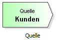

Der Startpunkt der Bewegung der Kunden durch eine Warteschlangenmodell stellt die Quelle dar. (In der Warteschlangentheorie wird fast immer der Begriff "Kunde" für die Elemente, die sich durch das System bewegen, verwendet. In der Realität kann es sich dabei auch um Werkstücke, Aufträge, usw. handeln.)
Um ein Element - in diesem Fall eine Quelle - in dem Modell hinzuzufügen, ziehen Sie diese mit gedrückter linker Maustaste auf die Zeichenfläche.
Ziehen Sie dieses Element aus der Vorlagenleiste links auf die Zeichenfläche:
